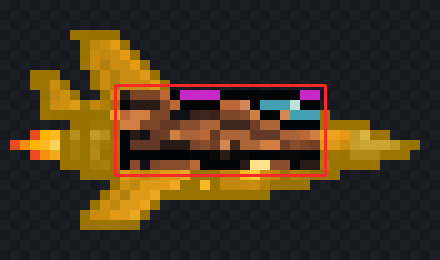
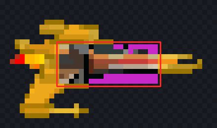
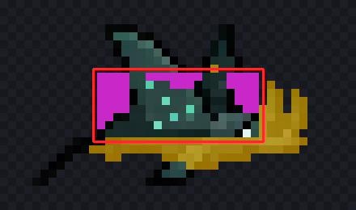
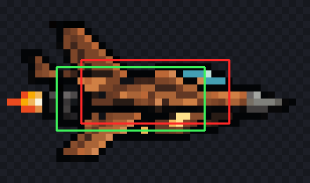
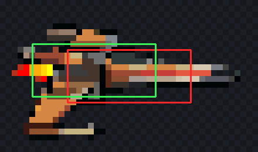
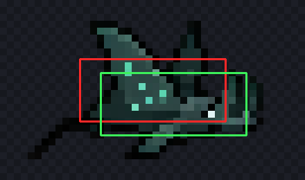
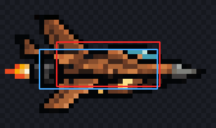
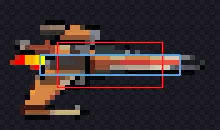
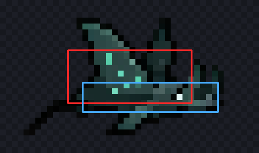

A hitbox da nave
27/11/2026 · o rebalanceamento, etapa 2 · a sua queixa: "às vezes relam e não tomam dano, ou não relam e tomam dano". Nada mudou no jogo: é a medida de hoje e duas opções.
1. Como é hoje
A nave usa uma caixa fixa de 21×9 px, igual para todas, centrada no quadro de 44×26 (GameScene.HITBOX_NAVE). Ela foi fixada em 27/09 com o jato, para a arte não mudar a dificuldade. As naves foram redesenhadas depois (23–25/10), e ninguém conferiu a caixa contra o desenho novo.
a caixa · casco FORA da caixa (encosta e não toma dano) · caixa SEM casco embaixo (toma dano sem encostar). O casco é o desenho que não muda entre os quadros; o fogo do motor fica de fora. Ampliado 10×.



| Nave | Casco (largura × altura) | Casco fora da caixa | Caixa sem casco | Quanto o casco passa da caixa |
|---|---|---|---|---|
| Terminus (as duas pinturas) | 40×20 | 59% | 3% | frente 9,5 · trás 9,5 · cima 5,5 · baixo 5,5 px |
| X-Aelo (as duas pinturas) | 38×20 | 61% | 19% | frente 8,5 · trás 8,5 · cima 4,5 · baixo 6,5 px |
| Charybdis | 27×13 | 47% | 26% | frente 5,5 · trás 0,5 · cima 0,5 · baixo 3,5 px |
Lendo: o casco fora da caixa (o âmbar) é o PERDÃO de propósito do gênero: a caixa menor que a nave faz o shmup parecer justo (o comentário no código diz isso). O que não é de propósito é a caixa sobre o vazio (o magenta): na X-Aelo, embaixo do nariz; na manta, nos dois cantos de cima. É ali que se toma dano sem encostar.
2. A opção A — a mesma caixa 21×9, no lugar certo de cada nave
hoje · a 21×9 com o mínimo de vazio. A dificuldade (o tamanho) fica a mesma.



O problema da A: para fugir do vazio, a caixa recua para a base das asas e deixa o NARIZ sem colisão (a X-Aelo, 6 px para trás). Os inimigos vêm pela frente: o "encosta e não toma" aumenta justamente onde mais acontece.
3. A opção B — a maior caixa que cabe inteira dentro do casco
hoje · a maior caixa sem nenhum pixel vazio, seguindo a fuselagem até o nariz. Uma caixa por modelo.



O que muda: o "toma sem encostar" do lado da nave some nas três, e a caixa chega mais perto do nariz. Mas a X-Aelo e a manta ficam com a caixa mais BAIXA (4 e 5 px de altura, hoje 9): de cima e de baixo, perdoam mais do que hoje. A Terminus fica quase igual à de hoje.
4. O outro lado da colisão
A colisão é caixa contra caixa. Mesmo com a nave certa, a outra caixa também mente:
- os inimigos: 60% × 55% do quadro (
EnemySystem.ts); o batedor fino tem "avaliar a hitbox" anotado em 19/10 e 15/11; - os destroços e asteroides: 70% × 70%, e a caixa não gira com a pedra (eles giram até 40°/s);
- as peças do terreno: 60% da largura × a altura inteira.
Isso é a parte seguinte desta etapa. Saber contra o que você sentiu a colisão errada diz por onde começar.
5. A sua escolha: a colisão pelo DESENHO (no jogo, sem commit)
Você escolheu a colisão pelo desenho com 1 px de perdão (a técnica da Besta, 25/11). Ela já está no jogo para os inimigos e os tiros inimigos: a nave só toma o golpe se o desenho do casco (sem o fogo do motor, 1 px para dentro) cai no mesmo ponto do desenho do outro.
A medida que muda a conversa: um drone varrido em volta da nave, em 3.969 posições, contando onde ele FERE. A regra de hoje (as duas caixas) fere em 851 posições, nas três naves. Com os 2 px de perdão, ela NÃO feria em 44% (Terminus), 41% (X-Aelo) e 33% (Charybdis) das posições em que o desenho encosta, e feria sem encostar em 23, 82 e 17 posições.
⚠️ Corrigido em 27/11: a 1ª versão desta folha dizia "mais da metade" e mostrava uma tabela por peça com erros maiores. A medida movia as peças com body.reset, que deixa a caixa física no canto do quadro, sem o deslocamento que a centraliza, até o próximo passo da física. As contagens do DESENHO e as razões abaixo (×2,0, ×1,7…) não dependiam disso e continuam certas; a divisão "hoje erra" estava errada e foi refeita.
| Nave | Hoje (as caixas) | Desenho, 0 px | 1 px (a escolha) | 2 px | 3 px |
|---|---|---|---|---|---|
| Terminus | 851 | 1.967 (×2,3) | 1.736 (×2,0) | 1.467 (×1,7) | 1.265 (×1,5) |
| X-Aelo | 851 | 1.962 (×2,3) | 1.667 (×2,0) | 1.298 (×1,5) | 920 (×1,1) |
| Charybdis | 851 | 1.772 (×2,1) | ~1.490 (×1,75) | 1.243 (×1,5) | 1.023 (×1,2) |
O que isso quer dizer: com 1 px, a área em que um drone fere a nave DOBRA. O jogo fica mais justo ao olho (encostou, tomou; não encostou, não tomou) e bem mais duro: hoje, de um terço a quase metade dos encostos passava sem dano. Com 3 px, a área fica perto da de hoje, mas no lugar certo (o desenho, não a caixa). Para sentir jogando, em dev: ?perdao=1, ?perdao=2, ?perdao=3 na URL.
Conferido em jogo (scripts/test-colisao-desenho-jogo.mjs): o jogo bate com uma conta de pixels feita à parte em todas as posições das três naves; o drone e o tiro em cima da nave custam a vida, e o tiro volta ao pool.